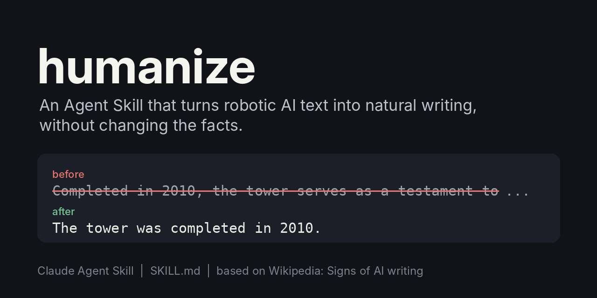

Humanize: a free AI text humanizer skill for Claude and other AI agents
Humanize is an open-source Agent Skill that rewrites robotic, AI-generated text into natural human writing without changing the facts. It follows Wikipedia's Signs of AI writing guide as it stood in November 2026 and works in Claude Code, Claude, Codex CLI, Cursor, Gemini CLI and other agents that read SKILL.md files.
View on GitHub Download the latest release

What it does
It has three modes. Rewrite takes a draft that sounds like ChatGPT and returns plain, specific writing with every fact, number and name kept. Write produces new text from facts you give, without AI patterns from the start. Review answers "does this sound AI-generated?" by quoting each suspect phrase, naming the pattern and rating how strong the signal is.
Example
The Burj Khalifa, standing at 828 metres, serves as a testament to Dubai's ambitious vision, symbolizing its rapid transformation. Completed in 2010, it plays a pivotal role in the city's tourism landscape, attracting millions of visitors annually.
becomes
The Burj Khalifa is 828 metres tall and was completed in 2010. It is a major part of Dubai's tourism and draws millions of visitors each year.
What it catches
Inflated importance ("a pivotal moment", "stands as a testament to"), shallow "-ing" endings, vague attribution ("experts argue"), the 2026 "Y rather than X" framing and corrective disclaimers, clusters of AI vocabulary such as delve, tapestry and the newer leverage, multifaceted and quietly, chatbot leftovers like "I hope this helps", leaked citation code such as oaicite or utm_source=chatgpt.com, and formatting habits like bold-label bullets and em dashes. It deliberately leaves alone what Wikipedia calls unreliable signs, such as good grammar or formal words.
Install
Claude Code plugin:
/plugin marketplace add nudarofficial/humanize /plugin install humanize@humanize
Any agent, with the open skills CLI:
npx skills add nudarofficial/humanize
Claude apps: download humanize.zip and upload it under Customize, Skills.
Frequently asked questions
What is Humanize?
Humanize is a free, open-source Agent Skill for Claude and other AI agents that rewrites robotic, AI-generated text into natural human writing without changing the facts. It follows Wikipedia's Signs of AI writing guide as of November 2026.
How do I install it?
In Claude Code run /plugin marketplace add nudarofficial/humanize and then /plugin install humanize@humanize. With the open skills CLI run npx skills add nudarofficial/humanize. In the Claude apps, upload dist/humanize.zip under Customize, Skills.
Does it change my facts?
No. Every fact, number, name and claim stays, and the skill never adds sources, quotes or statistics you did not provide. The test suite checks this on every example.
Will it get text past AI detectors?
It is not built for that and makes no such promise. It aims at writing that reads better to people. Any disclosure your school, employer or publisher requires still applies.
Does it work for academic writing?
Yes. It keeps the academic register and leaves quotations, citations and formulas untouched.
Which languages are supported?
English has full support. Arabic and other languages get the language-independent rules; the checker's word lists are English only.
Is it free?
Yes. The code is MIT and the skill text is CC BY-SA 4.0, adapted from Wikipedia. Copyright 2026 nudarofficial.